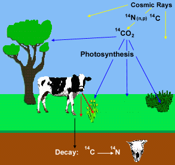

One of the most important questions asked about any ancient object is just
how old it really is. There are a number of scientific techniques which can
be used to date antiquities, but probably the best known and most frequently
used is radiocarbon or 14C dating. Radiocarbon dating can only be
applied to organisms that were once alive and is a means of determining how
long ago they died.

Radiocarbon dating is possible because of the existence in nature of a tiny
amount of 14C, or radiocarbon, a radioactive isotope of carbon. This
isotope is produced in the upper atmosphere by the action of cosmic rays on
14N. This 14C combines with oxygen to produce carbon dioxide
(CO2) and is taken in by plants during photosynthesis. From plants
this 14C is absorbed into the tissues of every living thing via the
food chain. Since it is radioactive, it is unstable and decays away at a known
rate. While any plant or animal is alive the 14C lost by radioactive
decay is constantly replaced through the food chain, but when that organism
dies, no more 14C is taken in, and the amount present in the tissues
goes down.
 By measuring how much
14C remains in ancient organic materials, it is possible to calculate
how long ago they died. To do this requires extensive chemical processing, carried
out in laboratories like that of the British Museum To convert the carbon in
the ancient objects to a form in which the very low level radioactivity (way
below background levels) can be measured.
By measuring how much
14C remains in ancient organic materials, it is possible to calculate
how long ago they died. To do this requires extensive chemical processing, carried
out in laboratories like that of the British Museum To convert the carbon in
the ancient objects to a form in which the very low level radioactivity (way
below background levels) can be measured.
.gif)
Most radiocarbon dating is carried out on bone or charcoal, as these are the
organics that most frequently survive from the past, but many other materials,
like the ancient Egyptian rope, mummy wrappings and reeds shown here, can also
be dated using this technique.
Do you want to find out more about radiocarbon dating?
Radiocarbon Dating, 1990, S Bowman (British Museum Press).
For details on the science behind Radiocarbon dating visit Radiocarbon-WEB
For more information on radiocarbon laboratories world-wide visit the Radiocarbon
home page